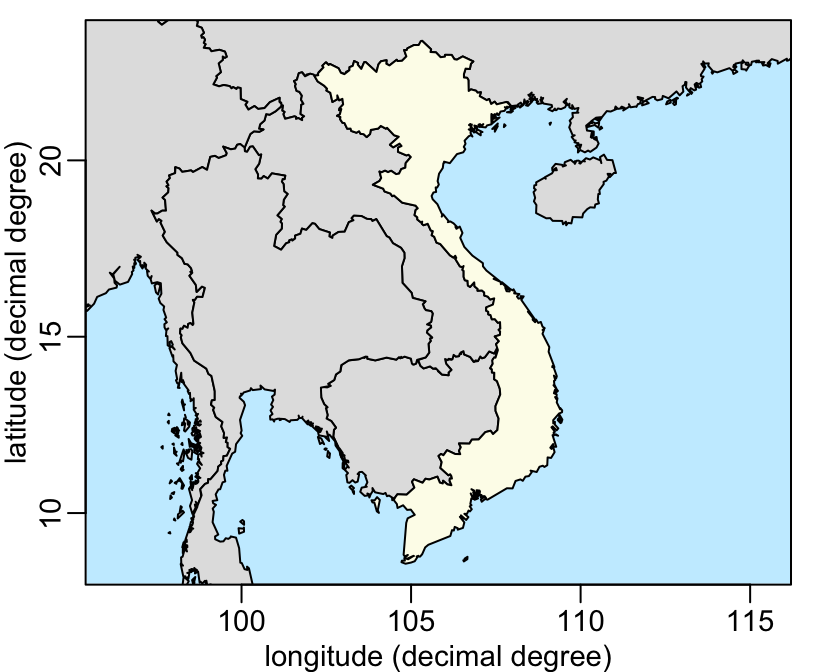
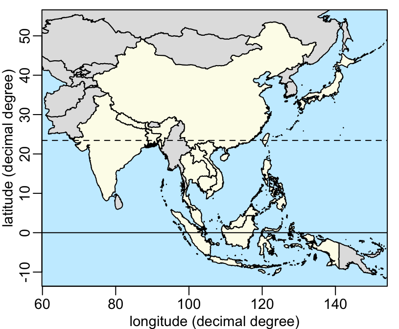

Two examples showing how we can draw a map showing the location of a country in southeast Asia and of a set a countries in southeast Asia.
Below is the code showing how to draw a map showing the location of Vietnam. Let’s first load the needed packages:
> library(gadmSEA)
> library(sp) # "plot" method
> library(magrittr) # %>% and %$% pipe operators
> library(dplyr) # "mutate" function and the " %>% " pipe operator
> library(purrr) # "map2" The packages sp, magrittr, dplyr and purrr can be installed from CRAN. Let’s start by defining some colors:
> rgb2 <- function(...) rgb(..., max = 255)
> blue <- rgb2(200, 237, 255) # for the sea
> grey <- rgb2(225, 225, 225) # for the countries other than Vietnam
> yellow <- rgb2(253, 252, 235) # for VietnamThe plot is in 2 steps:
> # (1) first we plot the background, in blue around the country of interest:
> plot(vietnam, xlab = "longitude (decimal degree)", border = NA,
+ ylab = "latitude (decimal degree)", bg = blue)
>
> # (2) then we plot the countries with yellow for Vietnam and grey for the rest:
> mcutils::datasets("gadmSEA") %>%
+ as.data.frame(stringsAsFactors = FALSE) %>%
+ setNames("country") %>%
+ mutate(col = ifelse(country == "vietnam", yellow, grey)) %$%
+ invisible(map2(country, col, ~ plot(get(.x), col = .y, add = TRUE)))
>
> # (3) finally we optionally add the axes and a box:
> axis(1); axis(2); box(bty = "o")
We can use the same pipeline to highlight more than one country. For example, these countries:
> ctr <- c("vietnam", "philippines", "cambodia", "japan", "china", "thailand",
+ "singapore", "indonesia", "malaysia", "taiwan", "bangladesh", "laos",
+ "india", "nepal")The map can be drawn with the same 3 steps as before:
> plot(vietnam, xlab = "longitude (decimal degree)", border = NA,
+ ylab = "latitude (decimal degree)", bg = blue,
+ xlim = c(68, 146), ylim = c(-11, 54))
>
> mcutils::datasets("gadmSEA") %>%
+ as.data.frame(stringsAsFactors = FALSE) %>%
+ setNames("country") %>%
+ dplyr::mutate(col = ifelse(country %in% ctr, yellow, grey)) %$%
+ invisible(purrr::map2(country, col, ~ plot(get(.x), col = .y, add = TRUE)))
>
> axis(1); axis(2); box(bty = "o")
>
> # adding the equator and the tropic:
> abline(h = c(0, 23.43695), lty = 1:2)